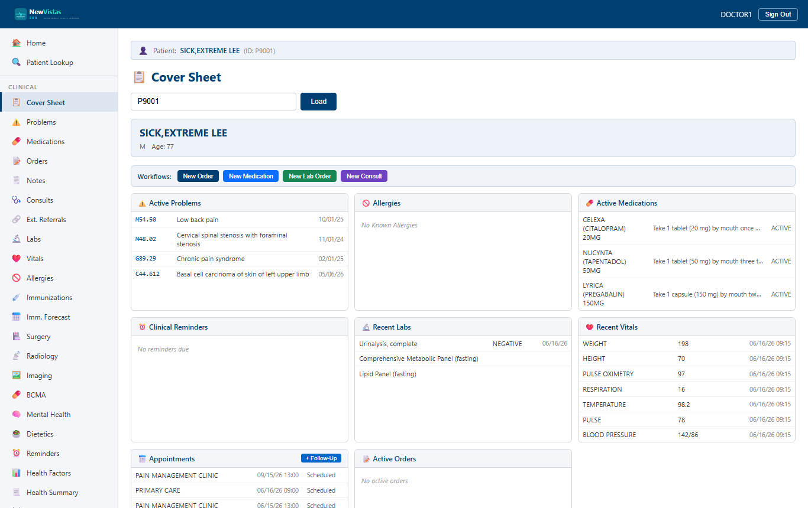

Cover Sheet
The Cover Sheet is the one-screen summary of a patient — problems, allergies, medications, reminders, recent labs and vitals, appointments, and active orders — plus quick actions to start new work. It's the equivalent of the CPRS Cover Sheet tab.
Open the Cover Sheet
- In the sidebar, under Clinical, click Cover Sheet (or go to
/cover-sheet). - In the Patient ID field, type the patient ID (e.g.
P9001). - Click Load (or press Enter).

What you see
Patient banner
At the top, the patient banner shows identity and at-a-glance flags:
- Name (bold, navy), sex, and age.
- If admitted — an amber badge with the room/bed.
- If service-connected — a green badge showing the SC percent.
- If CWAD flags exist (Crisis / Warning / Allergy / Directive) — a red badge.
Color = meaning
Badge colors are consistent across the whole system: red = danger/alert,
amber = caution, green = good/active. The same scheme appears on labs,
vitals, and order priorities.
Quick-action bar
Below the banner, four shortcuts start common work for this patient:
- New Order, New Medication, New Lab Order, New Consult.
Summary panels
The body is a grid of bordered cards, each a live summary:
- Active Problems — code, diagnosis, onset.
- Allergies — allergen, severity, reactions (always shown in full).
- Active Medications — drug, sig, status.
- Clinical Reminders — name, status, due date.
- Recent Labs — flagged (abnormal) values appear in red.
- Recent Vitals — abnormal values flagged in red.
- Appointments — clinic, date/time, status (with a + Follow-Up button).
- Active Orders — order text, status, start date.
Tip
Empty panels say so in italics ("No active problems", "No Known
Allergies") rather than showing a blank box — so you can tell "none" from
"not loaded."